Case Study
WS
4/15/2020
d_casestudy2.RmdData
For this simple case study we use the Blanchard/Quah (1989) dataset with quarterly data of real GDP growth rates and the detrended unemployment rate in the USA.
y = BQdata_xts
break_date = as_date("1970-01-01")
y_train = BQdata_xts[index(BQdata_xts) < break_date]
y_test = BQdata_xts[index(BQdata_xts) >= break_date]
dim_out = ncol(y_train)
plot(y)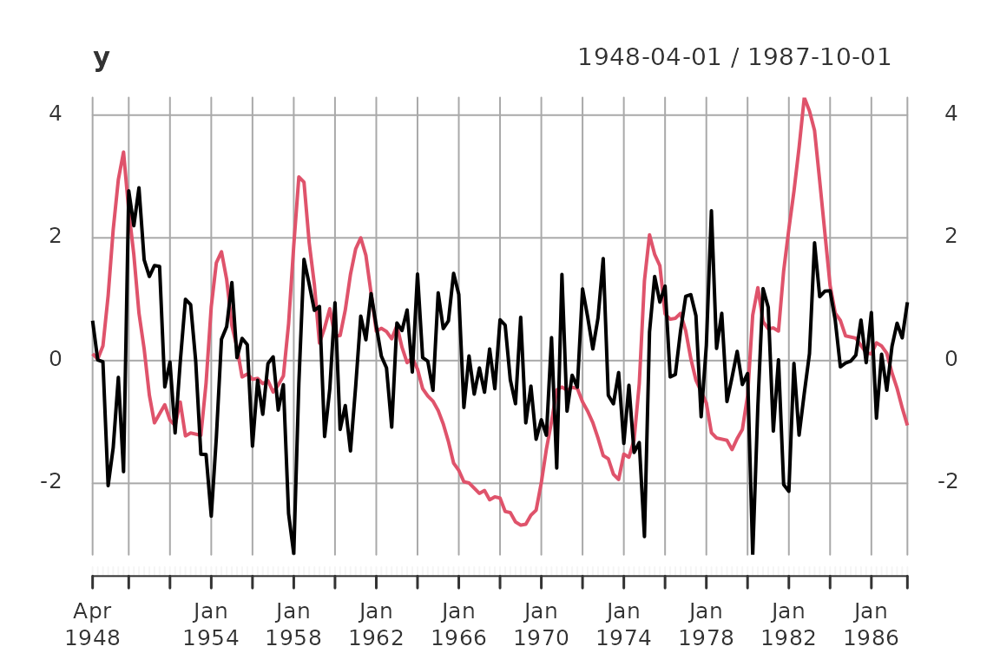
addLegend('topleft', c('GDP growth rate', 'Unemployment rate'), col = c('black', 'red'),
lwd = 2, bty = 'n')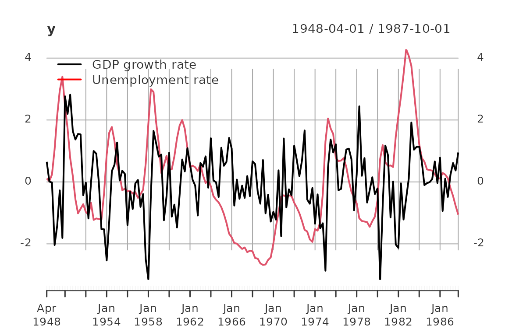
addEventLines(xts("Break", break_date))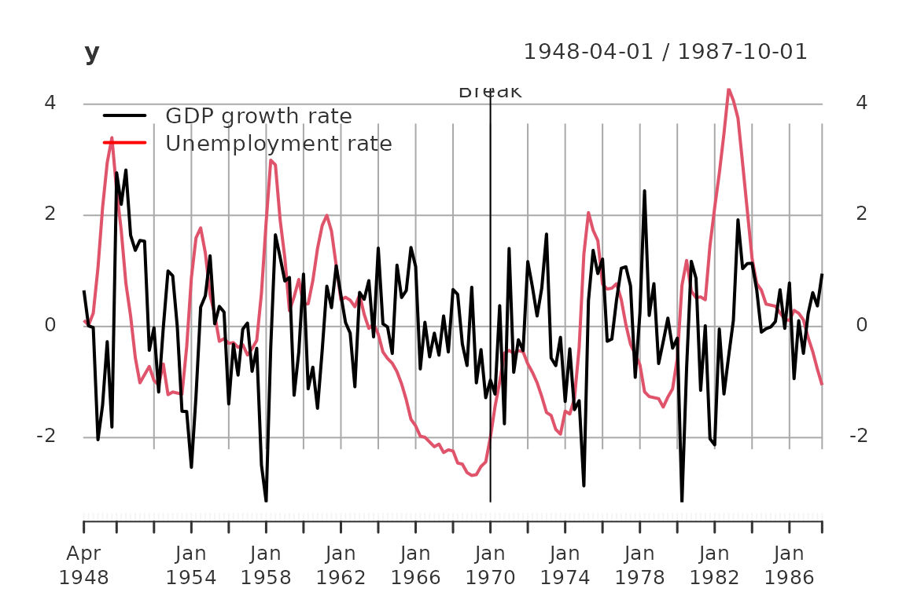
The data set contains 159 observations from 1948-04-01 to 1987-10-01. For estimation we use the first 87 observation till 1969-10-01.
The data is scaled such that the sample variances of the two series are equal to one.
AR Model
Here, we estimate an AR model where the order is determined via AIC. The only essential input for the function est_ar() is a data-object, e.g. a matrix with observations in rows and variables in columns, or a covariance-object. The defaults are using AIC for model selection, Yule-Walker estimation, and the sample.mean for estimating the \(\mathbb{E}\left(y_t\right)\).
out = est_ar(y_train, mean_estimate = 'zero')
out %>% names()
#> [1] "model" "p" "stats" "y.mean" "ll"Important statistics regarding model selection are contained in the slot stats
out$stats| p | n.par | lndetSigma | ic |
|---|---|---|---|
| 0 | 0 | 1.013188 | 1.013188 |
| 1 | 4 | -2.193313 | -2.101359 |
| 2 | 8 | -2.231092 | -2.047184 |
| 3 | 12 | -2.257910 | -1.982047 |
| 4 | 16 | -2.317073 | -1.949257 |
| 5 | 20 | -2.336830 | -1.877060 |
| 6 | 24 | -2.362950 | -1.811226 |
| 7 | 28 | -2.380498 | -1.736819 |
| 8 | 32 | -2.452787 | -1.717155 |
| 9 | 36 | -2.461676 | -1.634090 |
| 10 | 40 | -2.522346 | -1.602806 |
| 11 | 44 | -2.539423 | -1.527929 |
| 12 | 48 | -2.565177 | -1.461728 |
The estimates as armamod object are stored in
out$model
#> ARMA model [2,2] with orders p = 1 and q = 0
#> AR polynomial a(z):
#> z^0 [,1] [,2] z^1 [,1] [,2]
#> [1,] 1 0 -0.4579266 -0.1795184
#> [2,] 0 1 0.3098179 -0.9328347
#> MA polynomial b(z):
#> z^0 [,1] [,2]
#> [1,] 1 0
#> [2,] 0 1
#> Left square root of noise covariance Sigma:
#> u[1] u[2]
#> u[1] 0.9567816 0.0000000
#> u[2] -0.2050479 0.3490723The remaining slots are
out$ll
#> [1] -1.741221
out$p
#> [1] 1
out$y.mean
#> [1] 0 0The estimated models are collected in two lists
modelsand estimates.
Statespace Models
CCA Estimate
out = est_stsp_ss(y_train, method = 'cca', mean_estimate = 'zero')
out %>% names()
#> [1] "model" "models" "s" "stats" "info" "y.mean"
out$model
#> state space model [2,2] with s = 2 states
#> s[1] s[2] u[1] u[2]
#> s[1] 0.9191263 0.1912447 -0.1103757 0.7043585
#> s[2] -0.3340845 0.6472138 -0.6742802 0.2083379
#> x[1] 0.1800227 -0.5626354 1.0000000 0.0000000
#> x[2] 1.4254461 0.1339044 0.0000000 1.0000000
#> Left square root of noise covariance Sigma:
#> u[1] u[2]
#> u[1] 0.9477920 0.0000000
#> u[2] -0.1968541 0.3460504Only the “chosen” model with s=1 has a value for lndetSigma below because the order selection criteria is performed first (and based on the singular values of the “normalized” Hankel matrix).
out$stats| s | n.par | Hsv | lndetSigma | criterion |
|---|---|---|---|---|
| 0 | 0 | NA | NA | 0.9480826 |
| 1 | 4 | 0.9736953 | NA | 0.5022205 |
| 2 | 8 | 0.5448774 | -2.229582 | 0.4863466 |
| 3 | 12 | 0.2751153 | NA | 0.6217772 |
| 4 | 16 | 0.0760915 | NA | 0.8213164 |
The slot models (plural) is only non-NULL if keep_models == TRUE.
out$models
#> NULLSave the model
models$CCA = out$model
estimates$CCA = list(model = out$model, n.par = 2*dim_out*out$s)DDLC estimate
ML estimation of statespace model with a “DDLC” parametrization. We use the concentrated log likelihood, hence the noise covariance is not parametrized!
Of course, we should wrap this procedure into a suitable estimation procedure/function.
tmpl = tmpl_DDLC(models$CCA, balance = 'minimum phase', sigma_L = 'identity')
th0 = numeric(tmpl$n.par)
llfun = ll_FUN(tmpl, y_train, skip = 0, which = "concentrated")
control = list(trace = 1, fnscale = -1, maxit = 10)
out = optim(th0, llfun, method = 'BFGS', control = control)
#> initial value 1.440187
#> iter 10 value 1.393777
#> final value 1.393777
#> stopped after 10 iterations
th = out$par
model = fill_template(th, tmpl)
# reparametrize
tmpl = tmpl_DDLC(model, balance = 'minimum phase', sigma_L = 'identity')
llfun = ll_FUN(tmpl, y_train, skip = 0, which = "concentrated")
control$maxit = 20
out = optim(th0, llfun, method = 'BFGS', control = control)
#> initial value 1.393777
#> iter 10 value 1.393607
#> final value 1.393607
#> converged
th = out$par
model = fill_template(th, tmpl)
# reparametrize
tmpl = tmpl_DDLC(model, balance = 'minimum phase', sigma_L = 'identity')
llfun = ll_FUN(tmpl, y_train, skip = 0, which = "concentrated")
control$maxit = 200
out = optim(th0, llfun, method = 'BFGS', control = control)
#> initial value 1.393607
#> final value 1.393607
#> converged
th = out$par
model = fill_template(th, tmpl)
# out = ll(model, y_train, skip = 0, which = "concentrated")
model$sigma_L = t(chol(model$sigma_L))
models$DDLC = model
estimates$DDLC = list(model = model, n.par = tmpl$n.par)ML Estimate of Echelon Form Model
ML estimation of the statespace model in echelon canonical form. We first have to coerce the CCA estimate into echelon canonical form.
lag.max = 20
ir = impresp(models$CCA, lag.max = lag.max)$irf # impulse response
nu = pseries2nu(ir) # Kronecker indices
nu
#> [1] 1 1
# transform the CCA estimate into echelon canonical form
model = stspmod(sys = pseries2stsp(ir, method = 'echelon')$Xs,
sigma_L = models$CCA$sigma_L)
# check
all.equal(autocov(model, lag.max = lag.max),
autocov(models$CCA, lag.max = lag.max))
#> [1] TRUE
tmpl = tmpl_stsp_echelon(nu, sigma_L = 'identity')
th0 = extract_theta(model, tmpl, on_error = 'stop', ignore_sigma_L = TRUE)
llfun = ll_FUN(tmpl, y_train, skip = 0, which = "concentrated")
control$maxit = 500
out = optim(th0, llfun, method = 'BFGS', control = control)
#> initial value 1.440187
#> iter 10 value 1.393688
#> final value 1.393607
#> converged
th = out$par
model = fill_template(th, tmpl)
out = ll(model, y_train, skip = 0, which = "concentrated")
# model$sigma_L = t(chol(out$S))
models$SSECF = model
estimates$SSECF = list(model = model, n.par = tmpl$n.par)ARMA models
HRK estimate
Initial estimate via HRK procedure. This should be replaced
with est_arma_hrk3().
tmpl = tmpl_arma_echelon(nu, sigma_L = 'chol')
out = est_arma_hrk(y_train, tmpl = tmpl, mean_estimate = 'zero')
#> HRK estimation of ARMA model: m=2, n.obs=87, p=1, q=1
#> initial AR estimate of noise p.max=9, p=8, ll=-1.085391
#> iter |th - th0| n.val MSE ll
#> 1 0.967 78 0.846 -1.282
models$HRK = out$model
estimates$HRK = list(model = out$model, n.par = tmpl$n.par - dim_out*(dim_out+1)/2)ML Estimate of Echelon Form Model
ML estimation of ARMA model in echelon form.
tmpl = tmpl_arma_echelon(nu, sigma_L = 'identity')
th0 = extract_theta(models$HRK, tmpl, on_error = 'stop', ignore_sigma_L = TRUE)
llfun = ll_FUN(tmpl, y_train, skip = 0, which = "concentrated")
out = optim(th0, llfun, method = 'BFGS', control = control)
#> initial value 1.404641
#> iter 10 value 1.393736
#> final value 1.393607
#> converged
th = out$par
model = fill_template(th, tmpl)
out = ll(model, y_train, skip = 0, which = "concentrated")
# model$sigma_L = t(chol(out$S))
models$ARMAECF = model
estimates$ARMAECF = list(model = model, n.par = tmpl$n.par)Compare Models
For this data set the three ML estimates are essentially equivalent:
all.equal(impresp(models$DDLC, lag.max = lag.max),
impresp(models$SSECF, lag.max = lag.max))
#> [1] "Component \"irf\": Mean relative difference: 2.075071e-05"
all.equal(impresp(models$DDLC, lag.max = lag.max),
impresp(models$ARMAECF, lag.max = lag.max))
#> [1] "Component \"irf\": Mean relative difference: 9.231668e-06"Therefore we only keep the “SSECF” estimate for the further evluations/comparisons.
Portmanteau test for serial correlation for the AR1 estimate:
u = solve_inverse_de(models$AR1$sys, as.matrix(y_train))$u
pm_test(u, 8, dim_out^2)| lags | Q | df | p |
|---|---|---|---|
| 2 | 11.22127 | 4 | 0.0241866 |
| 3 | 12.63544 | 8 | 0.1250236 |
| 4 | 16.29370 | 12 | 0.1781512 |
| 5 | 19.35190 | 16 | 0.2508379 |
| 6 | 20.69316 | 20 | 0.4153864 |
| 7 | 31.86943 | 24 | 0.1302638 |
| 8 | 33.88714 | 28 | 0.2046137 |
Compare estimates: collect statistics/tests into a matrix for easy comparison:
stats = compare_estimates(estimates, y_train, n.lags = 8)
if (requireNamespace("kableExtra", quietly = TRUE)) {
stats %>%
kable() %>%
kableExtra::kable_styling(bootstrap_options = c("striped", "hover"))
} else {
stats
}| #par | ll | AIC | BIC | FPE | PM test | |
|---|---|---|---|---|---|---|
| AR1 | 4 | -1.462270 | 3.016495 | 3.129870 | 0.0700046 | 0.2046137 |
| CCA | 8 | -1.440187 | 3.064283 | 3.291033 | 0.0734647 | 0.0770933 |
| HRK | 8 | -1.404641 | 2.993191 | 3.219941 | 0.0684233 | 0.2380290 |
| SSECF | 8 | -1.393607 | 2.971121 | 3.197872 | 0.0669297 | 0.3550802 |
ACF
plot(autocov(y, lag.max = lag.max),
lapply(models, FUN = autocov, lag.max = lag.max),
legend = c('sample', names(models)),
col = c('black', default_colmap(length(models))))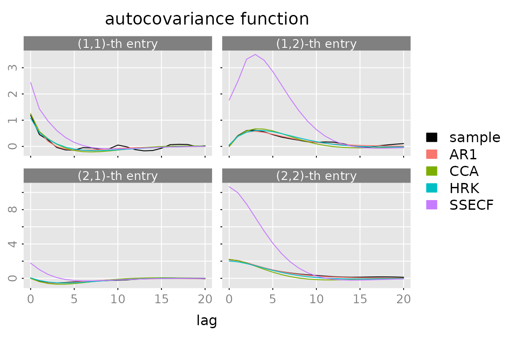
Spectral Density
plot(spectrald(models[[1]], n.f = 2^10),
lapply(models[-1], FUN = spectrald, n.f = 2^10),
legend = names(models))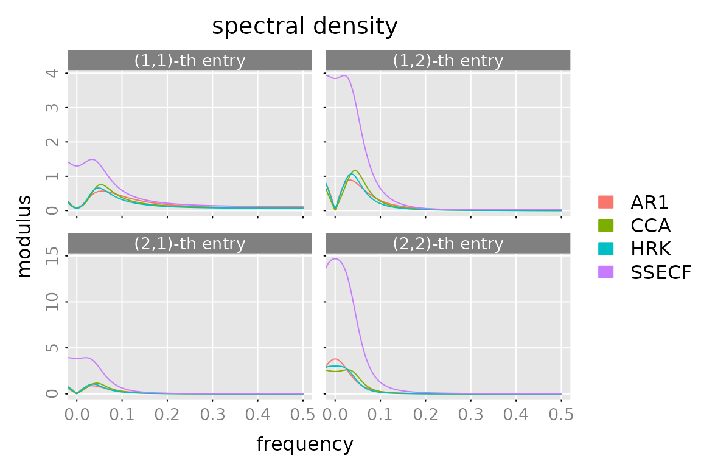
Impulse Response
plot(impresp(models[[1]], lag.max = lag.max),
lapply(models[-1], FUN = impresp, lag.max = lag.max),
legend = names(models))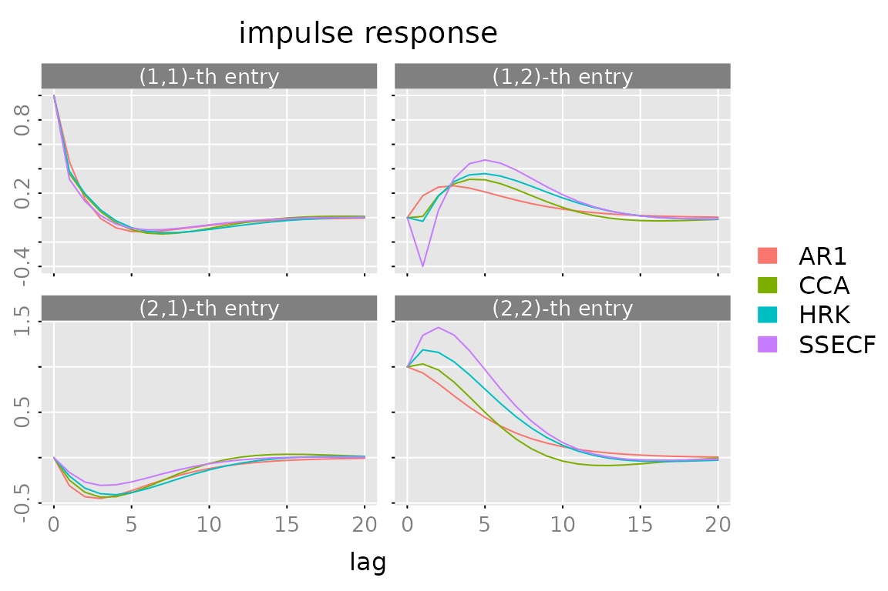
Prediction
Plot
n.ahead = 8
n.obs = nrow(y)
pred = predict(models$SSECF, y, h = c(1,4), n.ahead = n.ahead)
# add the date/time information to the list "pred"
# date = seq((start(y)-1)*3+1, by = 3, length.out = nrow(y)+n.ahead)
# date = as.Date(paste(start(y)[1] + (date-1) %/% 12, (date-1) %% 12 + 1, 1, sep='-'))
# pred$date = date
# the default "predictor names" h=1, h=2, ...
# don't look well, when plotted as expressions
dimnames(pred$yhat)[[3]] = gsub('=','==',dimnames(pred$yhat)[[3]])
# generate some plots ####################
# a simple/compressed plot of the data
p.y0 = plot_prediction(pred, which = 'y0', style = 'bw',
parse_names = TRUE, plot = FALSE)
p.y0()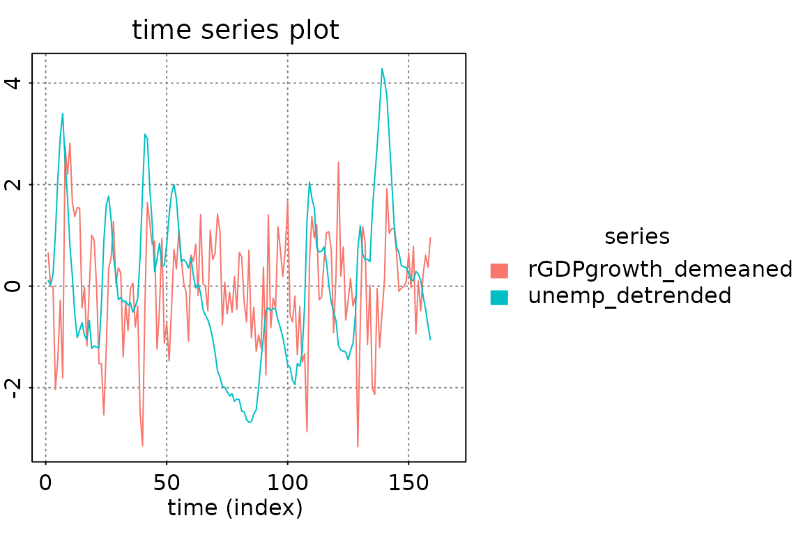
# a simple/compressed plot of the prediction errors
plot_prediction(pred, which = 'u0', parse_names = TRUE)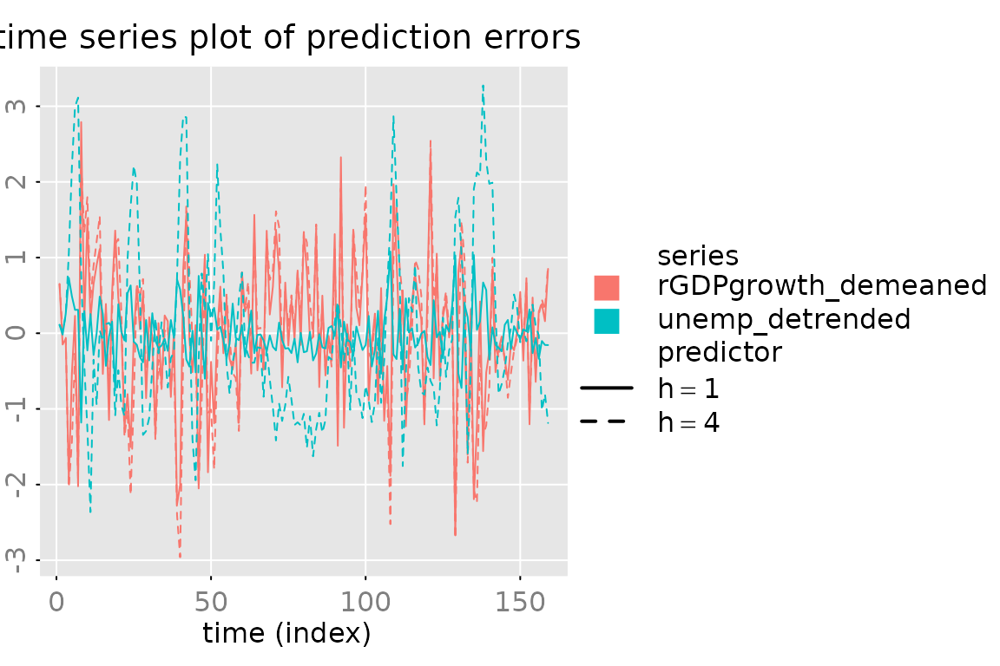
# plot of the prediction errors (with 95% confidence intervals)
plot_prediction(pred, which = 'error', qu = c(2,2,2),
parse_names = TRUE)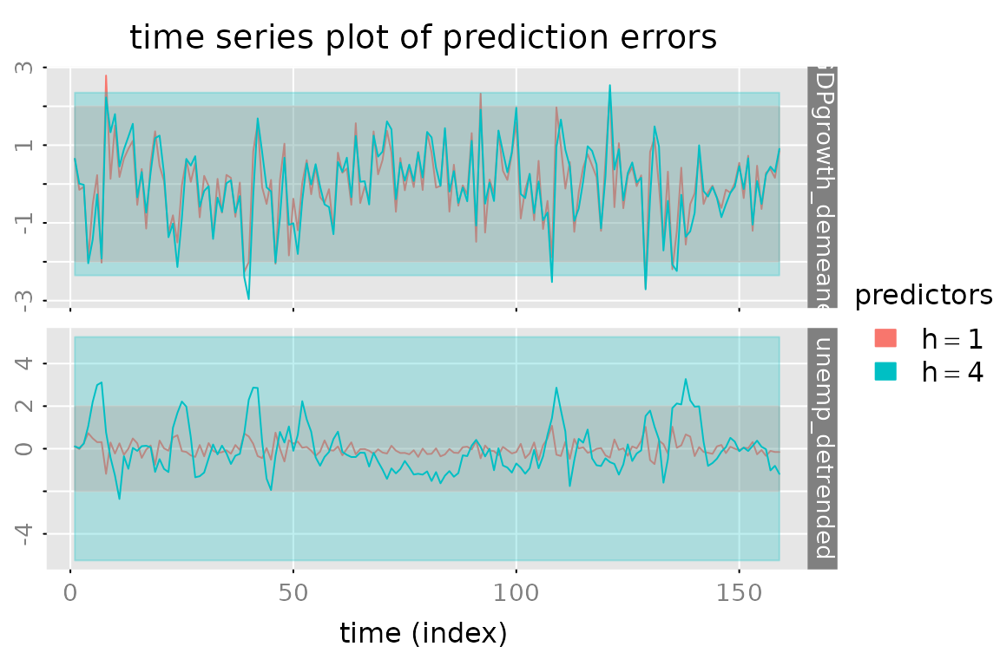
# plot of the true vales and the predicted values (+ 50% confidence region
# for the 1-step ahead prediction and the "out of sample" predictions)
p.y = plot_prediction(pred, qu = c(qnorm(0.75), NA, qnorm(0.75)),
parse_names = TRUE, plot = FALSE)
# subfig = p.y(xlim = date[c(n.obs-12, n.obs+n.ahead)])
# opar = subfig(1)
# abline(v = mean(as.numeric(date[c(n.obs, n.obs+1)])), col = 'red')
# # subfig(2)
# abline(v = mean(as.numeric(date[c(n.obs, n.obs+1)])), col = 'red')
# mtext(paste(' example plot:', date()), side = 1, outer = TRUE,
# cex = 0.5, col = 'gray', adj = 0)
# graphics::par(opar) # reset the graphical parameters
# CUSUM plot of the prediction errors
plot_prediction(pred, which = 'cusum',
style = 'gray', parse_names = TRUE)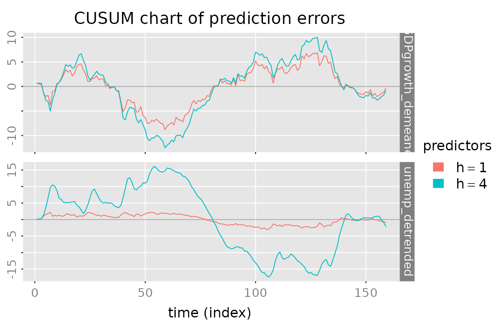
# CUSUM2 plot of the prediction errors
plot_prediction(pred, which = 'cusum2', parse_names = TRUE)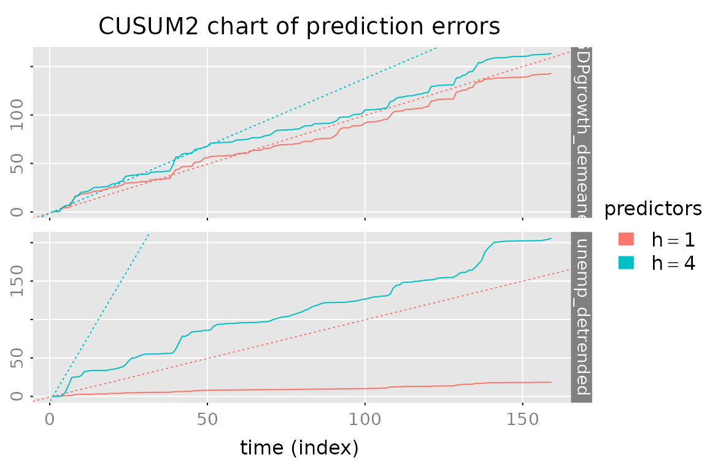
Evaluate and Compare Predictions
out = lapply(models, FUN = function(model) {predict(model, y, h = c(1,4))$yhat})
yhat = do.call(dbind, c(3, out) )
dimnames(yhat)[[3]] = kronecker(names(models), c(1,4), FUN = paste, sep = ':')
stats = evaluate_prediction(y, yhat, h = rep(c(1,4), length(models)),
criteria = list('RMSE', 'MAE','MdAPE'),
samples = list(in.sample = 1:dim(y_train), out.of.sample = (dim(y_train)+1):dim(y)))
#> Warning in 1:dim(y_train): numerical expression has 2 elements: only the first
#> used
#> Warning in (dim(y_train) + 1):dim(y): numerical expression has 2 elements: only
#> the first used
# dimnames.stats = dimnames(stats)
# stats = stats[,,c(seq(from = 1, by = 2, length.out = 6),
# seq(from = 2, by = 2, length.out = 6)), ]
# dim(stats) = c(3,2,6,2,3)
# dimnames(stats) = list(criterion = dimnames.stats[[1]], sample = dimnames.stats[[2]],
# predictor = names(models), h = paste('h=', c(1,4), sep = ''),
# data = dimnames.stats[[4]])
# use array2data.frame for "tabular" display of the results
stats.df = array2data.frame(stats, cols = 4)
stats.df$h = sub("^.*:","", as.character(stats.df$predictor))
stats.df$predictor = sub(":.$","", as.character(stats.df$predictor))
stats.df = stats.df[c('sample','h','criterion','predictor','rGDPgrowth_demeaned','unemp_detrended','total')]
stats.df = stats.df[order(stats.df$sample, stats.df$h, stats.df$criterion, stats.df$predictor),]
rownames(stats.df) = NULL
if (requireNamespace("kableExtra", quietly = TRUE)) {
stats.df %>%
kable() %>%
kableExtra::kable_styling(bootstrap_options = c("striped", "hover")) %>%
kableExtra::collapse_rows(columns = 1:3, valign = "top")
} else {
stats.df
}| sample | h | criterion | predictor | rGDPgrowth_demeaned | unemp_detrended | total |
|---|---|---|---|---|---|---|
| in.sample | 1 | RMSE | AR1 | 0.9504558 | 0.3513187 | 0.7165162 |
| in.sample | 1 | RMSE | CCA | 0.9427683 | 0.3437713 | 0.7095741 |
| in.sample | 1 | RMSE | HRK | 0.9407539 | 0.3346972 | 0.7060595 |
| in.sample | 1 | RMSE | SSECF | 0.9333399 | 0.3308350 | 0.7002054 |
| in.sample | 1 | MAE | AR1 | 0.7294001 | 0.2740340 | 0.5017170 |
| in.sample | 1 | MAE | CCA | 0.7251022 | 0.2685577 | 0.4968299 |
| in.sample | 1 | MAE | HRK | 0.7235106 | 0.2551712 | 0.4893409 |
| in.sample | 1 | MAE | SSECF | 0.7088170 | 0.2542711 | 0.4815441 |
| in.sample | 1 | MdAPE | AR1 | 87.2678257 | 20.0342420 | 52.8897843 |
| in.sample | 1 | MdAPE | CCA | 87.4154926 | 20.1617150 | 55.5970431 |
| in.sample | 1 | MdAPE | HRK | 87.1643611 | 25.0826798 | 51.6317436 |
| in.sample | 1 | MdAPE | SSECF | 84.9945947 | 22.8700095 | 51.2517523 |
| in.sample | 4 | RMSE | AR1 | 1.0305227 | 1.1728519 | 1.1039834 |
| in.sample | 4 | RMSE | CCA | 1.0340753 | 1.2132320 | 1.1272186 |
| in.sample | 4 | RMSE | HRK | 1.0345632 | 1.2004940 | 1.1206040 |
| in.sample | 4 | RMSE | SSECF | 1.0248524 | 1.1834136 | 1.1069756 |
| in.sample | 4 | MAE | AR1 | 0.7948530 | 0.9146552 | 0.8547541 |
| in.sample | 4 | MAE | CCA | 0.8019147 | 0.9588347 | 0.8803747 |
| in.sample | 4 | MAE | HRK | 0.8024096 | 0.9421335 | 0.8722715 |
| in.sample | 4 | MAE | SSECF | 0.7968589 | 0.9257861 | 0.8613225 |
| in.sample | 4 | MdAPE | AR1 | 95.5494245 | 73.4116911 | 89.7586084 |
| in.sample | 4 | MdAPE | CCA | 96.4454672 | 71.0146064 | 89.3042399 |
| in.sample | 4 | MdAPE | HRK | 96.3023047 | 76.2988191 | 87.6635597 |
| in.sample | 4 | MdAPE | SSECF | 96.2978539 | 73.5616172 | 89.2922635 |
| out.of.sample | 1 | RMSE | AR1 | 0.9998889 | 0.3927995 | 0.7596279 |
| out.of.sample | 1 | RMSE | CCA | 0.9793181 | 0.3660492 | 0.7392753 |
| out.of.sample | 1 | RMSE | HRK | 0.9809187 | 0.3552497 | 0.7377005 |
| out.of.sample | 1 | RMSE | SSECF | 0.9649344 | 0.3509004 | 0.7260267 |
| out.of.sample | 1 | MAE | AR1 | 0.7679097 | 0.2834695 | 0.5256896 |
| out.of.sample | 1 | MAE | CCA | 0.7502218 | 0.2662833 | 0.5082526 |
| out.of.sample | 1 | MAE | HRK | 0.7506223 | 0.2613681 | 0.5059952 |
| out.of.sample | 1 | MAE | SSECF | 0.7369045 | 0.2606049 | 0.4987547 |
| out.of.sample | 1 | MdAPE | AR1 | 98.3441782 | 22.7222538 | 58.2744063 |
| out.of.sample | 1 | MdAPE | CCA | 92.9245008 | 22.9246684 | 50.3690920 |
| out.of.sample | 1 | MdAPE | HRK | 90.6979145 | 21.4635151 | 49.2354982 |
| out.of.sample | 1 | MdAPE | SSECF | 93.4737624 | 21.8190844 | 49.4180249 |
| out.of.sample | 4 | RMSE | AR1 | 0.9960909 | 1.0842018 | 1.0410789 |
| out.of.sample | 4 | RMSE | CCA | 0.9983745 | 1.0728332 | 1.0362728 |
| out.of.sample | 4 | RMSE | HRK | 0.9976987 | 1.0674377 | 1.0331568 |
| out.of.sample | 4 | RMSE | SSECF | 1.0011304 | 1.0791390 | 1.0408657 |
| out.of.sample | 4 | MAE | AR1 | 0.7582807 | 0.8265544 | 0.7924176 |
| out.of.sample | 4 | MAE | CCA | 0.7646327 | 0.8196955 | 0.7921641 |
| out.of.sample | 4 | MAE | HRK | 0.7634857 | 0.8137818 | 0.7886337 |
| out.of.sample | 4 | MAE | SSECF | 0.7677140 | 0.8146076 | 0.7911608 |
| out.of.sample | 4 | MdAPE | AR1 | 94.3096618 | 67.6228769 | 86.3295065 |
| out.of.sample | 4 | MdAPE | CCA | 97.5873129 | 69.7855043 | 85.5228705 |
| out.of.sample | 4 | MdAPE | HRK | 95.2805283 | 69.9050687 | 85.1506287 |
| out.of.sample | 4 | MdAPE | SSECF | 97.9900632 | 66.4893310 | 84.2382402 |
stats.df %>% names()
#> [1] "sample" "h" "criterion"
#> [4] "predictor" "rGDPgrowth_demeaned" "unemp_detrended"
#> [7] "total"